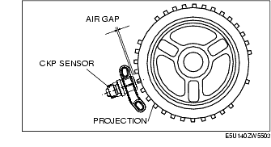
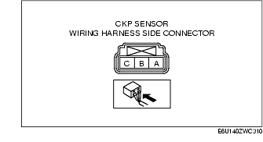
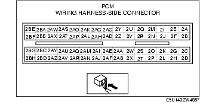

Workshop Manual ➭ ENGINE ➭ CONTROL SYSTEM[L8, LF] ➭ CRANKSHAFT POSITION (CKP) SENSOR INSPECTION [L8, LF]
CRANKSHAFT POSITION (CKP) SENSOR INSPECTION [L8, LF]
id0140i7800500
{: #wp1059779}
*Note*{: #wp1063279}
• Before performing the following inspection, make sure to follow the procedure as indicated in the troubleshooting flowchart. (See Troubleshooting Procedure.)
Air Gap Inspection
-
Verify that the CKP sensor is securely installed.
-
Using a thickness gauge, measure the air gap between the plate projections at the back of crankshaft pulley and the CKP sensor.{: #wp1059825}

• If not within the specification, inspect the plate projections for cracks or bending.
- If there is any malfunction, replace the crankshaft pulley. (See ENGINE REMOVAL/INSTALLATION [L8, LF].) {: #wp1059866}- If the monitor item condition/specification (reference) is not within the specification, even though there is no malfunction, carry out the "Circuit Open/Short Inspection".
Air gap0.5-1.5 mm {0.02-0.05 in}
Visual inspection
-
Remove the battery cover.
-
Disconnect the negative battery cable. (See BATTERY REMOVAL/INSTALLATION [L8, LF].)
-
Remove the CKP sensor. (See CRANKSHAFT POSITION (CKP) SENSOR REMOVAL/INSTALLATION [L8, LF].)
-
Verify that there are no metal shavings on the sensor.
• If the monitor item condition/specification (reference) is without the specification even though there is no malfunction, carry out the "Circuit Open/Short Inspection".
Voltage Inspection
-
Install all removed parts.
-
Idle the engine.
Caution
• Water penetrating the connector will cause sensor malfunction. To prevent this, be careful not to damage the wiring harnesses or the waterproof connector so as to cause water penetration.
- Measure the output voltage using an oscilloscope.{: #wp1060073}

• If not within the specification, replace the CKP sensor. (See CRANKSHAFT POSITION (CKP) SENSOR REMOVAL/INSTALLATION [L8, LF].) {: #wp1060100}• If the monitor item condition/specification (reference) is without the specification, even though the voltage is within the specification, carry out the "Circuit Open/Short Inspection".
**Voltage
+-----------------------------+--------------------------------+------------------------------------+ | Terminal {: #wp1060234} | Voltage (V) {: #wp1060236} | Condition {: #wp1060238} | +=============================+================================+====================================+ | C {: #wp1060152} | B+ {: #wp1060154} | Under any condition {: #wp1060210} | +-----------------------------+--------------------------------+------------------------------------+ | B {: #wp1060257} | 4.8 or more {: #wp1060260} | High output* {: #wp1060263} | +-----------------------------+--------------------------------+------------------------------------+ | | 0.8 or less {: #wp1060270} | Low output* {: #wp1060273} | +-----------------------------+--------------------------------+------------------------------------+ | A {: #wp1060277} | 0 {: #wp1060280} | Under any condition {: #wp1060283} | +-----------------------------+--------------------------------+------------------------------------+**{: #wp1060140}* : {: #wp1060381} Output voltage varies with crankshaft rotation.
Circuit Open/Short Inspection

-
Disconnect the PCM connector. (See PCM REMOVAL/INSTALLATION [L8, LF].)
-
Inspect the following wiring harnesses for an open or short circuit. (Continuity Inspection)
Open circuit
• If there is no continuity, the circuit is open. Repair or replace the wiring harness. {: #wp1060489}- CKP sensor terminal A and PCM terminal 2AB {: #wp1060503}- CKP sensor terminal B and PCM terminal 2W {: #wp1060517}- CKP sensor terminal C and PCM terminal 2AQ
Short circuit
• If there is continuity, the circuit is shorted. Repair or replace the wiring harness. {: #wp1060547}- CKP sensor terminal A and power supply {: #wp1060561}- CKP sensor terminal B and power supply {: #wp1060575}- CKP sensor terminal B and body ground {: #wp1060585}- CKP sensor terminal C and body ground